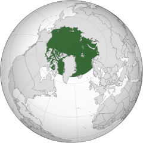
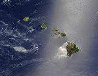
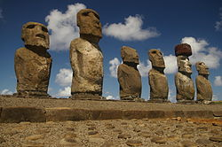

Alaska forma parte de los Estados Unidos, como un estado (desde el 3 de enero de 1959 pasa a ser el estado número 49), situado en el extremo noroeste de América del Norte, con capital en Juneau. Fue el penúltimo en incorporarse a los Estados Unidos, sustituyendo a Texas como el estado más grande de la nación. Se halla rodeado por los océanos Ártico y Pacífico, comparte frontera con Canadá, y está separado de Rusia por el estrecho de Bering.

Hawái (en inglés: Hawaii; en hawaiano: Hawaii) es el más reciente de los cincuenta estados de los Estados Unidos (desde el 21 de agosto de 1959). El estado ocupa la mayor parte del archipiélago de Hawái, el grupo de islas más norteño de la Polinesia, en el océano Pacífico central, al suroeste de los Estados Unidos continentales, al sureste de Japón y el noreste de Australia.

Isla de Pascua (en idioma rapanui Rapa Nui, «Rapa grande»4 ) es una isla de Chile ubicada en la Polinesia, en medio del océano Pacífico. Tiene una superficie de 163,6 km², lo que la convierte en la mayor de las islas del Chile insular, y una población de 5034 habitantes, concentrados principalmente en Hanga Roa, capital y único poblado existente en la isla.
